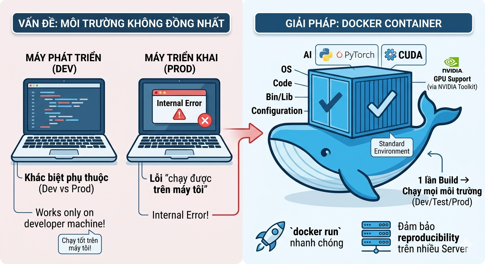
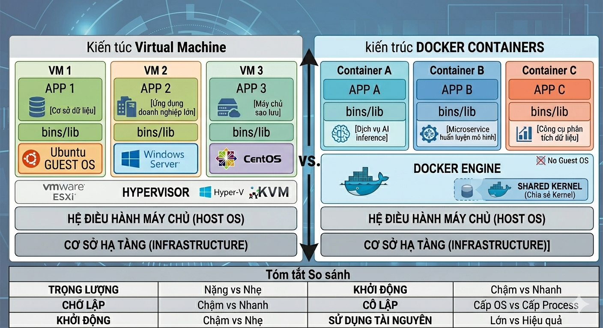
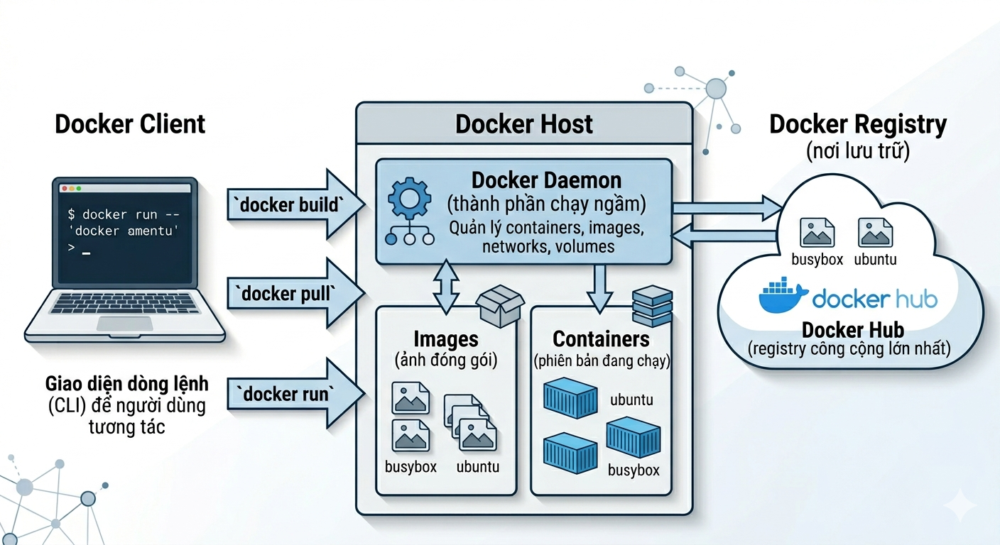
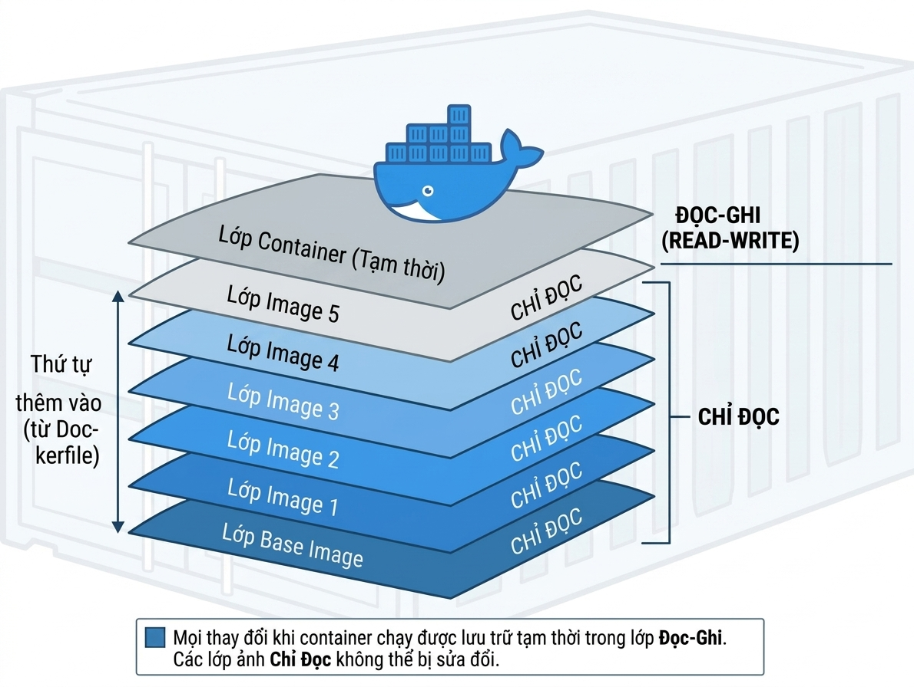
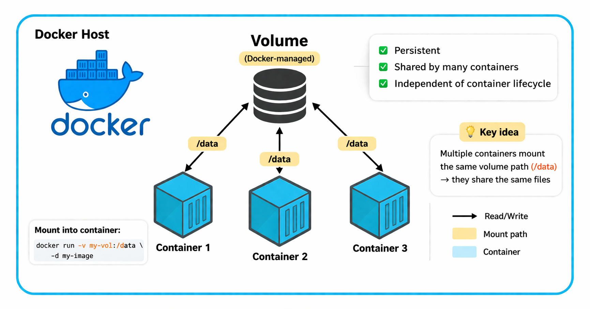
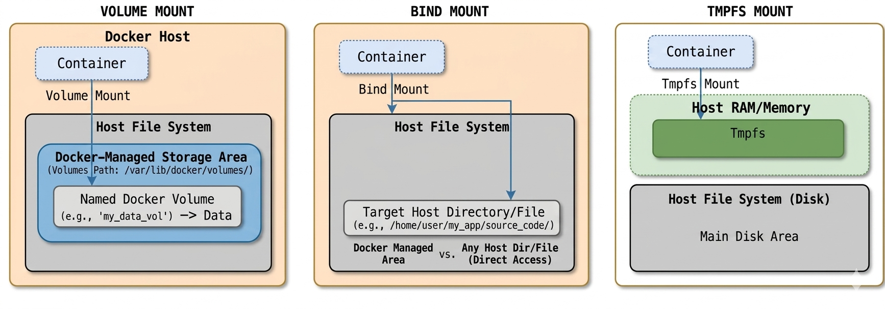

Trường ĐH Công nghệ – Đại học Quốc gia Hà Nội
Giảng viên: Trịnh Ngọc Huỳnh

| Tiêu chí | Virtual Machine (VM) | Docker (Container) |
|---|---|---|
| Cốt lõi ảo hóa | Ảo hóa tầng phần cứng (Hypervisor-based) |
Ảo hóa tầng hệ điều hành (OS-level, Shared Kernel) |
| Hệ điều hành | Mỗi VM có OS khách riêng | Dùng chung OS Host |
| Kích thước | Lớn (hàng GB) | Nhỏ (hàng MB) |
| Tài nguyên (RAM/CPU) | Tốn nhiều tài nguyên | Rất nhẹ, tối ưu tài nguyên |
| Khởi động | Chậm (vài phút) | Gần như tức thì (vài giây) |
| Cô lập | Cô lập hoàn toàn (cấp OS) | Cô lập cấp process |
| UI | Chủ yếu GUI, có CLI | Chủ yếu CLI, có GUI |
| Ví dụ tiêu biểu | VMWare, VirtualBox | Docker |


Mở Terminal / Command Prompt và gõ các lệnh sau:
docker --version
docker run hello-world
docker ps -a
Lệnh docker run hello-world sẽ tải image từ Docker Hub và chạy container đầu tiên.

Cấu trúc Layered tối ưu hóa lưu trữ và truyền tải dữ liệu
Cách ly ở mức tiến trình (process-level) nhưng vẫn chia sẻ chung hệ điều hành (Kernel) với máy Host.
create →
start →
stop →
remove
Container có thể ghi file tạm, nhưng dữ liệu này sẽ mất hoàn toàn khi
bị xóa.
→ Cần dùng Volume để lưu trữ vĩnh viễn.
python:3.10, nginx:latest).
docker pull
để tải về và chạy thử trên máy của họ


📦 1. Quản lý Docker Volume
🚀 2. Mount Volume vào Container
🔗 3. Bind Mount (Host ↔ Container)
⚡ 4. Tmpfs Mount (RAM only)
-p HostPort:ContainerPort
Tạo mạng nội bộ ảo để các Container giao tiếp với nhau. Đây là loại được dùng nhiều nhất.
Container dùng chung network stack với máy Host (không có sự cô lập mạng, hiệu năng cao nhất).
Container hoàn toàn không có kết nối mạng (cô lập tuyệt đối).
"Mỗi thành phần là một Container riêng biệt..."
docker run.version: "3.9"
services:
frontend:
image: ai-system-frontend:latest
build: ./frontend
ports:
- "8080:80"
networks:
- app_network
depends_on:
- backend
backend:
image: ai-system-backend:latest
build: ./backend
ports:
- "5000:5000"
volumes:
- ./backend:/app
networks:
- app_network
networks:
app_network:
driver: hostBuild image và khởi chạy toàn bộ container ở chế độ nền (detached):
$ docker compose up -d
Dừng container và xóa bỏ các tài nguyên mạng, volume tạm thời:
$ docker compose down -v
docker compose logs -f để theo
dõi nhật ký hoạt động của tất cả service.
docker compose up -d
docker compose down -v
docker compose up -d --build
project/
├── docker-compose.yml
├── backend/
│ ├── app.py
│ ├── model.py
│ ├── requirements.txt
│ ├── Dockerfile
│ └── data/
│ └── input.csv
└── frontend/
├── index.html
└── Dockerfile
Cố định Python + CUDA + Thư viện vào Image ➜ Đảm bảo kết quả huấn luyện (Reproducibility) ➜ Triển khai Inference đồng nhất trên mọi Server.
| services: | Định nghĩa các container (web, db, api). |
| depends_on: | Thiết lập thứ tự khởi động. |
| networks: | Kênh liên lạc nội bộ giữa các service. |